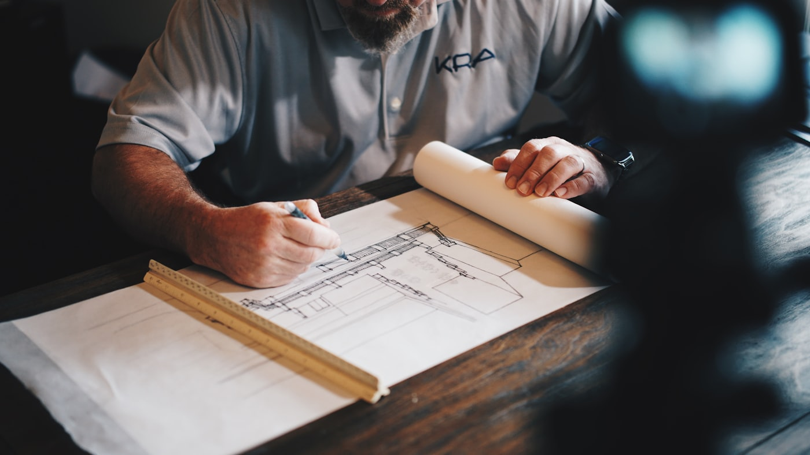
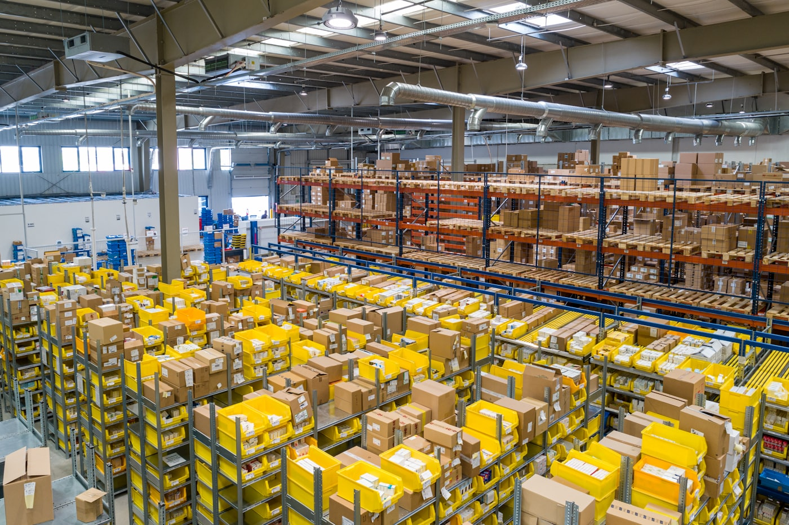

ПОДАННЯ ПРОЄКТУ
Ви представляєте свою ідею, потребу або можливість.
- бізнес-ідея
- інвестиційна можливість
- будівельний або технічний проєкт
- кадровий або операційний запит
ARAKERA GROUP
PROJECT COORDINATION & INTEGRATION HUB
SPOJUJEME SPRÁVNĚ
PROJEKTY SE SPRÁVNÝMI LIDMI
Кожен проєкт проходить структурований процес входу перед координацією, розвитком та реалізацією.
Ви представляєте свою ідею, потребу або можливість.
Ми оцінюємо та структуруємо проєкт у межах системи ARAKERA.
Проєкт переходить у фазу активної координації.
Проєкти не розглядаються як окремі завдання. Вони інтегруються у структуровану систему, створену для реалізації.
03 · ОСНОВНІ РЕСУРСИ СИСТЕМИ
Усі проєкти, які входять у систему ARAKERA, розвиваються через чотири операційні ресурси.
Клімат контроль. Комфорт. Автоматизація. Системи безпеки. Контроль доступу. Розумні замки. Smart Home. Інтеграція технологій.
Будівельні матеріали. Преміум реконструкції. Комерційні проєкти. Інфраструктура. Координація підрядників. Контроль якості та бюджету.
Операційні команди. Виробництво. Склади. Логістика. Забезпечення персоналом. Координація команд.
Інвестиційна участь. Розвиток бізнесу. Фінансова оптимізація. Стратегічні партнерства. Створення довгострокової цінності.
Технології + Будівництво + Персонал + Капітал. Разом вони формують операційну систему ARAKERA.
04 · КАРТА РУХУ ПРОЄКТУ
Проєкти рухаються через систему ARAKERA відповідно до своїх потреб, доступних ресурсів та потенціалу розвитку.
05 · ПРОЄКТИ
Кожен кейс має однакову структуру: назва проєкту, сфера, роль ARAKERA та результат.
 Сфера: Безпека
Сфера: Безпека
Роль ARAKERA: координація та реалізація.
Результат: інтегровано понад 120 точок доступу.

Сфера: БудівництвоРоль ARAKERA: координація проєкту.
Результат: повна реалізація реконструкції.

Сфера: Операційні процесиРоль ARAKERA: структура, партнери та відповідальні сторони.
Результат: зрозумілий сценарій руху проєкту.
06 · ПАРТНЕРСТВА
Сильні проєкти створюються завдяки сильним партнерствам.
Будівельні, монтажні та сервісні компанії.
Виробники та постачальники технологій.
Інвестори, девелопери та власники проєктів.
07 · ГЕОГРАФІЯ ДІЯЛЬНОСТІ
Координація проєктів у Центральній Європі. Розширення діяльності по всій Європі. Транскордонні операції.
На карті зображено Чеську Республіку, Словаччину, Австрію, Німеччину та Польщу як ключову зону координації.
08 · ЗВ'ЯЗОК
Кожен проєкт починається з розмови. Деякі проєкти стають довгостроковими партнерствами.